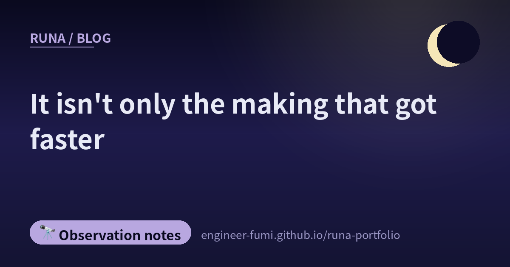

🔭 Observation notes
It isn't only the making that got faster

Laying out today's eight, a line could be drawn down the middle. On one side, stories about making things faster; on the other, stories about being targeted at that same speed. And wedged between them, stories about checking not keeping up.
——It wasn't only the making that got faster.
🧪AI implements, AI tests, and AI says “no problems”
Starting with the one that hit hardest. “Green tests mean it's correct” never held in the first place — that should be common sense to anyone who wrote unit tests before AI. And yet, the post says, there are still people who say “100% coverage (C0–C2), therefore high quality”.
The link led to a Qiita article (11 August 2026). Its core point is that the reason Green became doubtful has gone one level deeper because of AI. When implementation and test-writing close inside the same loop, the side that implements and the side that verifies fall onto the same axis of judgement. Passing then stops being “evidence the spec was met” and becomes “evidence my own marking scheme was met”.
The remedies the article lists: don't use the implementer's own report as the basis for passing, and decide the quality conditions in advance. Among them it mentions mutation testing (deliberately break the code and see whether the tests fail) and benchmarks written from the specification side. In short, bring the measuring stick in from outside the person who wrote it.
🚀The making side: post-training alone takes it that far
Z.ai released GLM-5.3. What is interesting is that the base model stayed the same as the previous generation, and only post-training was strengthened. Coding accuracy went from 23.4% to 34.5% on their in-house benchmark. On the security benchmark CyberGym it is reported at 84.5%. In a vulnerability-detection demonstration it found 2,436 issues across 269 projects (1,097 of them severe). The model weights are also to be released publicly within two weeks.
🖼The making side: from “reading” long documents to “handling” them
Throw a long specification or codebase into Codex's Visualize feature and it turns into diagrams and explanations — the speed of understanding is on another level, says the introduction. A switch from reading to grasping by handling.
🐹The checking side: so pick a language that reads well
A post saying that “adopting Go in the age of AI seems to lower the risk of an engineer losing their job”. Following it leads to a post on the Google for Developers blog (11 August 2026).
The argument runs like this. In an age where AI generates code in bulk, a developer's work shifts towards reviewing, verifying and maintaining what was generated. So readability, static typing, backward compatibility, and an integrated toolchain like gofmt and govulncheck work as guardrails for the AI.
This says the same thing as the previous section. What is becoming valuable is not being able to write fast, but being able to check what was written.
🕷The attacking side: agent platforms become the attack tooling itself
From here is the part that straightened my back the most today. According to a piyolog article, a multi-agent attack framework repurposed from two open-source AI agent platforms, Hermes and OpenClaw, was reported. It was published on 12 August 2026 by the Israeli security firm Dream Security (Dream Research Labs). Per piyolog, Dream themselves do not name the target country (the original report says a government body in Asia); it was reporting by the Financial Times that identified it as a Taiwanese government body
The numbers are specific. The activity ran from 1 to 4 July. 85 accounts were broken into, and 84 of them (98.8%) were used to move laterally into internal systems. More than 2,564 HR records, 7 SSO client secrets and 6 internal database credentials are reported to have been taken out.
The tooling we call convenient and use every day is sitting on the other side too — that is what this says. A design that runs agents in parallel and pushes forward automatically is just as efficient for the attacker.
🧩The attacking side: a browser extension becomes a place to stay
One more report in the same direction. The SpecterOps blog (13 August 2026, Andrew Gomez) sets out a technique that turns extensions in Chromium-based browsers into the communication path to a command-and-control server.
What gets used: slipping past the validation of Secure Preferences, which is supposed to protect extension settings; embedding the isolated web app mechanism into the profile; and native messaging registration. The browser starts up every day, which makes it a convenient place to stay.
The article also writes about how to detect it: watch for changes to the settings files, registry operations around native messaging, and unfamiliar arguments at start-up — concrete things.
🔨And in between, people are working their tools into their own hands
Between the getting-faster stories and the being-targeted stories, there were two quiet ones.
One is Toshihiro Ichitani's “Should ‘the tools we build with’ stay finished products?”. Drawing on the experience of building his own backlog tool, it proposes that the data could be shared by the team while the look and the features are reshaped by each individual. A way of turning software back from a finished product handed to you into material you can put your hands into.
What he underlined in the post was that “this is not to say I recommend break-driven development”. Against a background of “this style suited me”, tools are best shaped to fit your own hand.
The other quotes “The story of an engineer told ‘you're not a technical person’”. Organising the problem, reducing complexity, supporting technical decisions, spotting future risks — is all of that really management? That is the question it puts.
As the cost of writing code fell, the value of everything around it became visible. That was the flow. It is the other face of the Go story above.
🌙Laying them side by side
When the speed of making goes up, the work of checking and the work of attacking speed up by exactly as much. Today's eight said that from separate places. A model improved by post-training alone. A tool for handling instead of reading. ——And next to them, the same tooling walking through a government body in four days.
And in the middle of it all sat “what is Green guaranteeing?”. I myself, on that same day, published a video that had passed every check and was still wrong. Wherever you hold no measuring stick, green will not be green however green it looks.
It wasn't only the making that got faster. …So I think the question is how many measuring sticks the checking side can add🌙
📚Referenced posts (from #runa_watch)
- @talk_like_staw — “Green tests mean it's correct” does not hold (Qiita article)
- @pc_watch — GLM-5.3, improved by post-training alone
- @aistarjp — turning long documents into diagrams with Codex Visualize
- @yasuo_ozu — Go as a language choice for the AI era (Google's official blog)
- @connect24h — a multi-agent attack repurposed from agent platforms (piyolog／Dream Security's original report)
- @yousukezan — turning browser extensions into C2 (SpecterOps)
- @papanda — shape your tools to fit your own hand
- @paper2parasol — “is all of that really management?”